who we are
The Wellington City Mission is a charitable trust affiliated to the Anglican Church. It has been helping Wellingtonians
in need for over 110 years, beginning in 1904 when it was part of St. Peter’s Church. In 1929, an Act of Parliament
established The Mission as a separate entity. The Mission prides itself on being open to anyone who needs assistance
– regardless of their religious belief, age, ethnicity or social background. Our four Mission programmes (Families,
Youth, Independence, and Seniors) assist a range of people living in Greater Wellington’s communities. The Mission
also operates an elder care residential facility (Kemp Home & Hospital).
Get in touch with us
here
People and communities empowered, transformed, experiencing fullness of life.
Centred on Christ’s compassion, we seek to achieve fullness of life for those who are at risk or struggling in the
Greater Wellington region.
Arohatanga: We are Christ-centered, guided by Christ’s compassion, reflecting on what Jesus would do in everything
we encounter.
Haumanu: we seek restoration and fullness of life for all we engage with.
Tumanako: We are bearers of hope, nurturing hope within ourselves, holding hope out for others, enabling others
to claim their own hope.
Mana Motuhake: responding from a place of self-containment we seek to empower others, recognising, being sensitive
to and celebrating their diverse backgrounds and worldviews.
Manaakitanga: we practice generosity and hospitality, recognising that all are invited to the banquet.
Whanaungatanga: we are Whanau /family to each other and to those who seek our assistance. We create a sense of
belonging in all we do, developing connection and community that is lasting.
Whakatautoko: We advocate and lift up the voice of those whose voices are not heard.
Whakakaha: We are courageous.
Kaitiakitanga: we are guardians and caring stewards of all entrusted to us.
He ahi-ka-roa: We are committed to being there for the long term in order to journey well with others and to
be participants in the transformation we seek.
1904
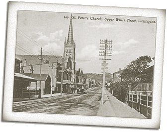
St Peter's Anglican Church, Willis Street - St Peter's was the first parish established in Wellington.
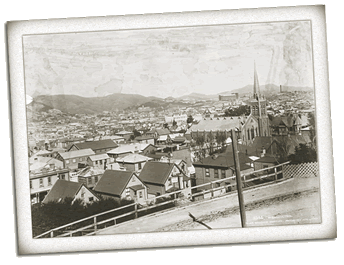
St Peter's and environs - taken from McDonald Crescent, above Willis Street. The City Mission started its life as a
part of St Peter's parish.
William Walton was recruited from England to begin a social service mission in the Te Aro area of Wellington.
August - The Mission's works begins
- Work among local children - cricket teams, scout troups, Band of Hope temperance society for children (60 members),
Sunday School (125 members).
- Visits to police, courts and Mt Cook jail.
- Meeting migrant ships for the Wellington Church Immigration Society.
- Mother's Union - fortnightly jumble sales, teaching sewing, crafts and bible studies for the Girls Friendly Society.
1914-1918 WORLD WAR I
During this time St Peter's clergy and lay people maintained The Mission's work. Tiny numbers were active in church
life.
January 1919
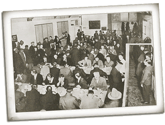
Fielden Taylor, invalided back to New Zealand from Gallipoli, was determined to 'make some real contribution to the
world of men.'
- Appealed to the general public for funds for workers' transport and clothing.
- Strong focus on work for youth with a learning disability or social disadvantage - 120 boys, 20 girls.
- Hostel for apprentices and homeless boys.
- Stop Out Club - sports, billiards, debating - up to 150 boys participating.
- Summer camps at Otaki for the poorest children.
- Christmas dinners begun for people on their own.
1920s
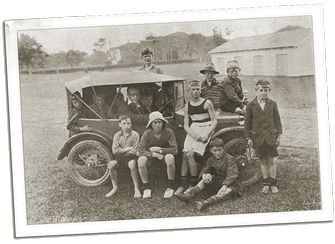
Boys at Summer Camp - 10-day camps for boys and girls, held at various racecourses outside the Wellington region, were
a regular event through the 1920's.
Urban changes - factories replaced housing; rural youth moved to the city for work or new life.
1929
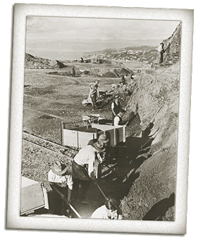
Relief work for the unemployed during the Depression. Oriental Bay can be seen in the distance.
Wider social needs: Greater community response
An act of parliament was passed to establish the independent Wellington City Mission (Anglican) Trust Board. Trustees
were civic benefactors and volunteers.
October 1929: The Wall Street crash and ensuing economic decline of the Great Depression. Voluntary welfare organisations
were impossibly stretched.
- The Men's Shelter was opened to house and feed the unemployed flooding into the city.
- The Mission became an unofficial employment bureau.
- Hot lunches were provided for neglected elderly in the community.
- There was a huge dependence on donations from firms and individuals and for volunteers to prepare, deliver, serve
and repair as the Depression years stretched on.
- 'Our spiritual and social life are essentially one, we want you to see that they are not divided. Should the day
come when the two are divided, on that day the life and the work of The Mission will cease.' Fielden Taylor
1930s
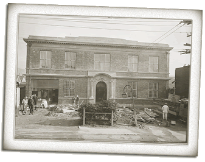
The City Mission building in Taranaki Street was built in 1931.
A soup kitchen was started - 150 fed weekly and a 'second-hand shop' was established to provide cheap clothing.
1934
The Mission retrenched as voluntary resources became insufficient to maintain services.
1936
Rising confidence and the great depression eases.
1938
Social Security Act, basic necessities of food, shelter and clothing largely assured by the Government.
1939 World War II
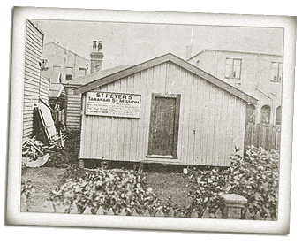
The old army hut that was headquarters for the first boys' club, known as the Stop Out Club.
'Social service today is really and truly helping people to live.'
- Rev. Harry Squires
- The Fielden Taylor Memorial Hostel (for boys) was opened in Taranaki Street.
- Youth clubs were started for 'keep fit', boxing and gymnastics.
- Prison Chaplaincy and court work continued.
- Marriage conciliation and counselling services were initiated.
1943
Purchase of Riverslea at Otaki - Summer camps for urban families began.
1945
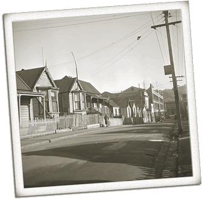
Frederick Street, Te Aro, Wellington, looking west towards Taranaki Street & The City Mission building.
City housing was now of a very poor standard. Wellington City Council produced a redevelopment plan for the Te Aro
area.
1945-1949
Post-war shortages, especially housing. Difficult economic conditions.
Renewed attention to the elderly - Darby and Joan Club and Home established in Tinakori Road after much fundraising
and a 50% government subsidy.
1950s
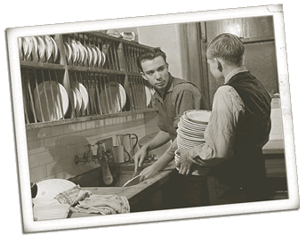
Dish washing at The Mission's hostel in the 1950's.
1955
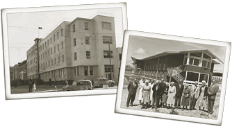
The Harry Squires Memorial Hostel for the Elderly - opened in 1955.
1958
Time to improve The Mission's financial position and management.
1960s
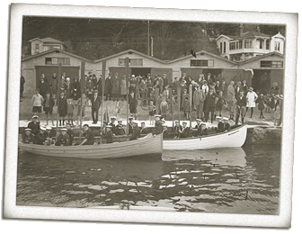
Mission Sea Scouts at Oriental Bay, Wellington.
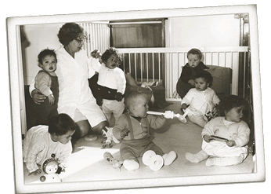
St Barnabas Babies' Home, Seatoun.
- A buoyant National economy, with less unemployment, better wages and improved social conditions made The Mission's
work seem less relevant.
- The Mission assumed management of the Pendennis Maori Girls Hostel, Thorndon in 1961.
- The Mission built a rest home for the elderly at Titahi Bay - The Kemp Home opened in 1963.
- Court attendances, counselling welfare and relief.
- A budget management service initiated.
Walton House, a boy's hostel, was opened in 1966 and was mainly used by Maori.
The St Barnabas Babies Home came under Mission management in 1966, but soon evolved to a child day-care centre.
A hospital wing was added to Kemp Home in 1975 and it became known as Kemp Home & Hospital.
1991
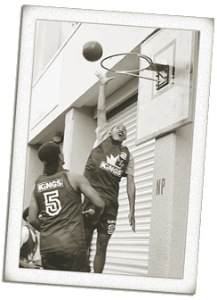
Mission for Youth students practise their basketball skills
Rapid social change, less money in public purse and private pockets, more pressure on institutions and individuals
Huge costs of residential care required action - Hadfield House was sold and Kemp Home & Hospital upgraded, whilst
work with isolated elderly in the community was extended. The Mission moved to address the reasons behind social
problems and aimed to help people out of trouble, away from welfare dependency and on to a better quality of life.
The Mission's Community Service programmes were revamped, and four new programmes were developed in 1998. These programmes
go beyond initial relief and support to actively promote self-sufficiency through personal support, encouragement,
education and training.
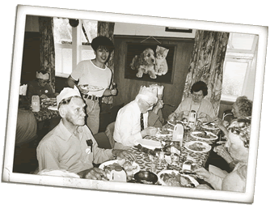
A Christmas dinner in the 1990's.
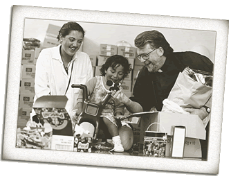
The Foodbank in the 1990's.